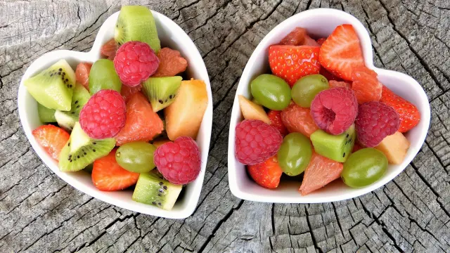

Mejores restaurantes saludables
Restaurante Lacaliza
Restaurante keyzen - Healthy Life
Lettus Málaga
Brida Real Food Teatinos
Noticia sobre recetas
Qué pasa si como fruta después de comer: mitos y verdades
Las frutas no llegan a los 1.000 litros de media, pero no quedan lejos. Son 962 por cada kilo.Frutas varias en cuencos con forma de corazón.Pixabay/silviarita Sin duda, consumir fruta es un hábito saludable que nos ayuda a llevar a cabo una dieta equilibrada más fácilmente. Sin embargo, los beneficios de la fruta en nuestro organismo pueden variar en función del momento en el que la consumimos; existen muchos mitos y verdades alrededor de este concepto. En España, la fruta fresca más consumida es la naranja, seguida del plátano, la manzana y la sandía, todas ellas se cultivan en nuestro país, lo que las convierte en frutas de proximidad. Esta tipología de frutas, además de generar un impacto positivo en nuestro organismo, lo hace en el medio ambiente al respetar el entorno, preservar el ciclo natural de los alimentos y generar menos desperdicios.
Las frutas no llegan a los 1.000 litros de media, pero no quedan lejos. Son 962 por cada kilo.Frutas varias en cuencos con forma de corazón.Pixabay/silviarita Sin duda, consumir fruta es un hábito saludable que nos ayuda a llevar a cabo una dieta equilibrada más fácilmente. Sin embargo, los beneficios de la fruta en nuestro organismo pueden variar en función del momento en el que la consumimos; existen muchos mitos y verdades alrededor de este concepto. En España, la fruta fresca más consumida es la naranja, seguida del plátano, la manzana y la sandía, todas ellas se cultivan en nuestro país, lo que las convierte en frutas de proximidad. Esta tipología de frutas, además de generar un impacto positivo en nuestro organismo, lo hace en el medio ambiente al respetar el entorno, preservar el ciclo natural de los alimentos y generar menos desperdicios.